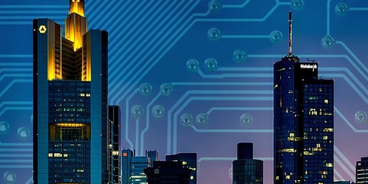

Smart Cities
Con el objetivo de crear ciudades sostenibles económica, social y medioambientalmente nacen las Smart Cities o ciudades inteligentes. Son aquellas en las que se aplican las tecnologías de la información y de la comunicación (TIC) con el objetivo de proveerlas de infraestructuras que garanticen:
- Un desarrollo sostenible.
- Un incremento de la calidad de vida de los ciudadanos.
- Una mayor eficacia de los recursos disponibles.
- Una participación ciudadana activa.
La Smart City nace de la necesidad de mantener una armonía entre todos estos aspectos.
El concepto de Smart City no solo se centra en los nuevos proyectos de crecimiento urbano, sino que se dirige también a la adecuación de las actuales ciudades en ciudades inteligentes.
Estos proyectos actuales están englobados dentro del tratado 20-20-20 de la Unión Europea donde se establecen una seria de objetivos a alcanzar en el año 2020:
- Que las emisiones de gases de efecto invernadero (GEI) se reduzcan en un 20%.
- Que el consumo de energía se reduzca un 20% mediante mejoras en la eficiencia energética.
- Que un 20% de la generación eléctrica sea con energías renovables.
Actualmente, los proyectos de remodelación y adecuación a las nuevas tecnologías se están llevando a cabo tanto en grandes urbes como en pequeños municipios, haciendo que las Smart Cities se conviertan en una realidad.
Siguiendo esta línea, el grupo Enel está desarrollando proyectos de Smart Cities en varias ciudades de Italia, España y Suramérica.